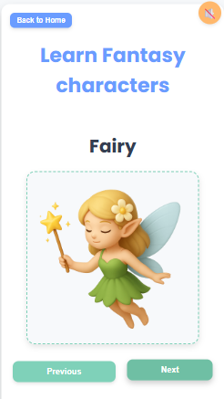

Learning to Read, One Letter Sound at a Time
We've added 21 new phonics pages to Teachings.AI — each one pairs a letter with a fun, familiar object so kids can practice the sound that letter makes, from B is for Ball all the way to Y is for Yak.


🔊 Phonics: 21 Letter-Sound Pages
Every page shows the letter's sound, a picture to match it, and a short quiz — great for reading practice at home or in the classroom.
Practice Phonics →🧚 Fantasy World: 7 New Character Pages
Meet the Alien, Angel, Elf, Fairy, Santa, Witch, and the tale of Pandora's Box — imaginative storybook characters with fun facts to spark creativity and storytelling.
Meet the Characters →Why Phonics Matters
- 🔤 Sound-Letter Connection — Pairing a letter with a real object builds early reading confidence.
- 🖼️ Visual Learning — A picture for every sound helps ideas stick.
- 🧠 Quick Quizzes — A fun way to check understanding after each page.
- 📱 Free & Instant — No login required, works on any device.